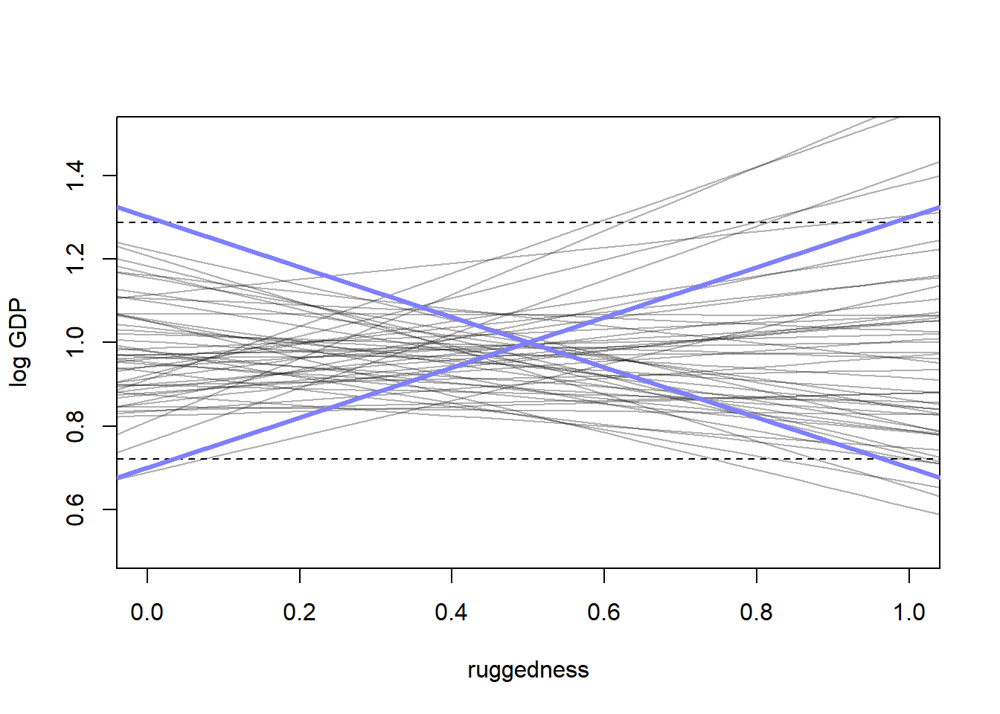
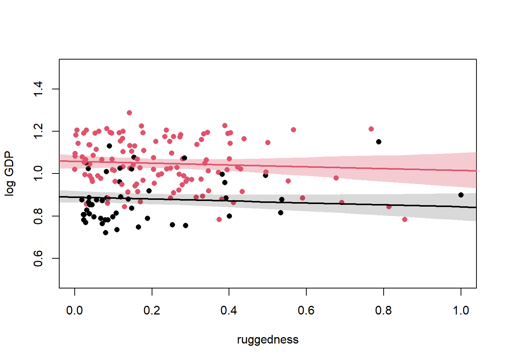
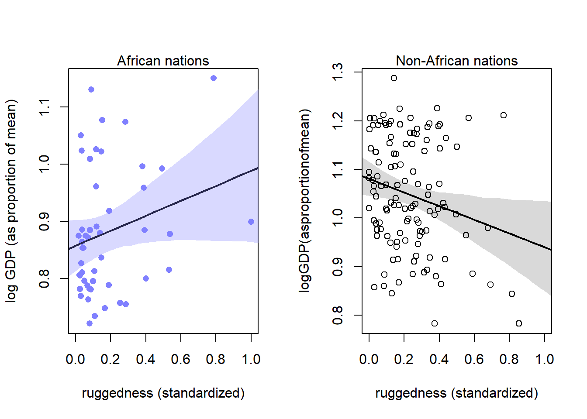

Chapter 8 Conditional manatees
8.1 Building an interaction
\(R\) = ruggedness, \(G\) = GDP, \(C\) = continent, \(U\) = unobserved variables.
library(dagitty)
library(rethinking)## Loading required package: rstan## Loading required package: StanHeaders## Loading required package: ggplot2## rstan (Version 2.21.5, GitRev: 2e1f913d3ca3)## For execution on a local, multicore CPU with excess RAM we recommend calling
## options(mc.cores = parallel::detectCores()).
## To avoid recompilation of unchanged Stan programs, we recommend calling
## rstan_options(auto_write = TRUE)## Do not specify '-march=native' in 'LOCAL_CPPFLAGS' or a Makevars file## Loading required package: cmdstanr## This is cmdstanr version 0.5.3## - CmdStanR documentation and vignettes: mc-stan.org/cmdstanr## - Use set_cmdstan_path() to set the path to CmdStan## - Use install_cmdstan() to install CmdStan## Loading required package: parallel## rethinking (Version 2.21)##
## Attaching package: 'rethinking'## The following object is masked from 'package:rstan':
##
## stan## The following object is masked from 'package:stats':
##
## rstudentdag_8.1 <- dagitty("dag{
R -> G
C -> G
U -> G
U -> R
}")
coordinates(dag_8.1) <- list(y = c(R = 0, G = 0, C = 0, U = 1),
x = c(R = 0, G = 1, U = 1, C = 2))
drawdag(dag_8.1)
\(G = f(R,C)\)
8.1.1 Making a rugged model
library(rethinking)
data(rugged)
d <- rugged
#log transform GDP
d$log_gdp <- log(d$rgdppc_2000)
#only include countries with GDP data
dd <- d[complete.cases(d$rgdppc_2000),]
#rescale variables
dd$log_gdp_std <- (dd$log_gdp) / mean(dd$log_gdp) # values of 1 is average
dd$rugged_std <- (dd$rugged) / max(dd$rugged) # values range from 0 to max ruggedness (1)Basic model \[\text{log}(y_{i}) \sim \text{Normal}(\mu_{i}, \sigma)\\ \mu_{i} = \alpha + \beta(r_{i} - \overline{r})\\ \alpha \sim \text{Normal}|(1,1)\\ \beta \sim \text{Normal}(0, 1)\\ \sigma \sim \text{Exponential}(1)\]
In R:
m8.1 <- quap(
alist(
log_gdp_std ~ dnorm(mu, sigma),
mu <- a + b*(rugged_std - 0.215),
a ~ dnorm(1, 1),
b ~ dnorm(0, 1),
sigma ~ dexp(1)
), data = dd
)Sample priors:
set.seed(11)
prior <- extract.prior(m8.1)
#set plot
plot(NULL, xlim=c(0,1), ylim=c(0.5, 1.5), xlab = "ruggedness", ylab = "log GDP")
abline(h=min(dd$log_gdp_std), lty = 2)
abline(h=max(dd$log_gdp_std), lty = 2)
#draw lines from prior
rugged_seq <- seq(from = -0.1, to = 1.1, length.out=30)
mu <- link(m8.1, post = prior, data = data.frame(rugged_std=rugged_seq))
for(i in 1:50){
lines(rugged_seq, mu[i,], col=col.alpha('black',0.3))
}
\(\alpha\) is too wild. intercept should be somewhere around where the mean of ruggedness hits 1 on the log GDP scale so adjust to Normal(1, 0.1).
\(\beta\) is also out of control. we need something (positive or negative) that spans the difference between the dashed lines
Slope should be \(\pm 0.6\) which is the differece between the maximum and minimum values of GDP
max(dd$log_gdp_std) - min(dd$log_gdp_std)## [1] 0.5658058
#proportion of slopes greater than 0.6
sum(abs(prior$b) > 0.6) / length(prior$b)## [1] 0.54Let’s fix the model
m8.1 <- quap(
alist(
log_gdp_std ~dnorm(mu,sigma),
mu <-a+b*(rugged_std-0.215),
a ~dnorm(1,0.1),
b ~dnorm(0,0.3),
sigma ~dexp(1)
), data = dd
)
precis(m8.1)## mean sd 5.5% 94.5%
## a 0.999998578 0.010412457 0.98335746 1.01663970
## b 0.001994904 0.054795958 -0.08557962 0.08956943
## sigma 0.136503830 0.007397023 0.12468196 0.14832570No association seen yet
8.1.2 Adding an indicator isn’t enough
Update \(\mu\)
\[\mu_{i} = \alpha_{CID[i]} + \beta(r_{i} - \overline{r})\]
#make an index variable for Africa (1) and other continents (2)
dd$cid <- ifelse(dd$cont_africa == 1, 1, 2)Now update the model
m8.2 <- quap(
alist(
log_gdp_std ~ dnorm(mu, sigma),
mu <-a[cid] + b * (rugged_std - 0.215),
a[cid] ~ dnorm(1, 0.1),
b ~ dnorm(0, 0.3),
sigma ~dexp(1)
), data = dd
)compare(m8.1, m8.2)## WAIC SE dWAIC dSE pWAIC weight
## m8.2 -252.1508 15.25508 0.00000 NA 4.291725 1.000000e+00
## m8.1 -188.9664 13.28913 63.18439 15.11018 2.574284 1.904075e-14precis(m8.2, depth = 2)## mean sd 5.5% 94.5%
## a[1] 0.88040848 0.015938408 0.8549358 0.90588113
## a[2] 1.04916209 0.010186473 1.0328821 1.06544204
## b -0.04651791 0.045690786 -0.1195406 0.02650479
## sigma 0.11239762 0.006092464 0.1026607 0.12213455post <- extract.samples(m8.2)
diff_a1_a2 <- post$a[,1] - post$a[,2]
PI(diff_a1_a2)## 5% 94%
## -0.1988472 -0.1384092rugged.seq <- seq(from = -0.1, to = 1.1, length.out = 30)
mu.NotAfrica <- link(m8.2, data = data.frame(cid=2, rugged_std=rugged.seq))
mu.Africa <- link(m8.2, data = data.frame(cid = 1, rugged_std = rugged.seq))
mu.NotAfrica_mu <- apply(mu.NotAfrica, 2, mean)
mu.NotAfrica_ci <- apply(mu.NotAfrica, 2, PI, prob = 0.97)
mu.Africa_mu <- apply(mu.Africa, 2, mean)
mu.Africa_ci <- apply(mu.Africa, 2, PI)
plot(NULL, xlim=c(0,1), ylim=c(0.5, 1.5), xlab = "ruggedness", ylab = "log GDP")
points(dd$rugged_std, dd$log_gdp_std, col = dd$cid, pch = 16)
lines(rugged.seq, mu.Africa_mu, lwd = 2, col = 1)
shade(mu.Africa_ci, rugged.seq)
lines(rugged.seq, mu.NotAfrica_mu, lwd = 2, col = 2)
shade(mu.NotAfrica_ci, rugged.seq, col = col.alpha(2, 0.3))
8.1.3 Adding an interaction does work
\[\mu_{i} = \alpha_{CID[i]} + \beta_{CID[i]}(r_{i} - \overline{r})\]
m8.3 <- quap(
alist(
log_gdp_std ~ dnorm(mu, sigma),
mu <-a[cid] + b[cid] * (rugged_std - 0.215),
a[cid] ~ dnorm(1, 0.1),
b[cid] ~ dnorm(0, 0.3),
sigma ~dexp(1)
), data = dd
)
precis(m8.3, depth = 2)## mean sd 5.5% 94.5%
## a[1] 0.8865632 0.015675727 0.86151037 0.91161605
## a[2] 1.0505709 0.009936627 1.03469025 1.06645155
## b[1] 0.1325019 0.074204597 0.01390861 0.25109517
## b[2] -0.1425818 0.054749512 -0.23008206 -0.05508147
## sigma 0.1094944 0.005935331 0.10000855 0.11898016compare(m8.1, m8.2, m8.3, func=PSIS)## Some Pareto k values are high (>0.5). Set pointwise=TRUE to inspect individual points.## PSIS SE dPSIS dSE pPSIS weight
## m8.3 -258.8749 15.35435 0.000000 NA 5.314384 9.688047e-01
## m8.2 -252.0033 15.30167 6.871589 6.936621 4.354277 3.119533e-02
## m8.1 -188.4136 13.40307 70.461243 15.674795 2.856543 4.850334e-16plot(PSIS(m8.3, pointwise = TRUE)$k)## Some Pareto k values are high (>0.5). Set pointwise=TRUE to inspect individual points.
8.1.4 Plotting the interaction
par(mfrow=c(1,2))
# plot Africa - cid = 1
d.A1 <-dd[dd$cid == 1,]
plot(d.A1$rugged_std, d.A1$log_gdp_std, pch=16, col=rangi2,
xlab="ruggedness (standardized)",ylab="log GDP (as proportion of mean)",
xlim=c(0,1) )
mu <-link(m8.3,data=data.frame(cid=1,rugged_std=rugged_seq))
mu_mean <-apply(mu,2,mean)
mu_ci <-apply(mu,2,PI,prob=0.97)
lines( rugged_seq,mu_mean,lwd=2)
shade( mu_ci,rugged_seq,col=col.alpha(rangi2,0.3))
mtext("African nations")
# plotnon-Africa-cid=2
d.A0 <-dd[dd$cid==2,]
plot( d.A0$rugged_std,d.A0$log_gdp_std,pch=1,col="black",
xlab="ruggedness (standardized)",ylab="logGDP(asproportionofmean)",
xlim=c(0,1) )
mu <-link(m8.3,data=data.frame(cid=2,rugged_std=rugged_seq))
mu_mean <-apply(mu,2,mean)
mu_ci <-apply(mu,2,PI,prob=0.97)
lines( rugged_seq,mu_mean,lwd=2)
shade( mu_ci,rugged_seq)
mtext("Non-African nations")
8.2 Symmetry of interactions
You can break an interaction into 2 identical phrasings
1. GDP ~ ruggedness depending on Africa
2. Africa ~ GDP depending on rugedness
\[\mu_{i} = (2 - CID_{i})(\alpha_{1} + \beta_{1}(r_{i} - \overline{r})) + (CID_{i} - 1)(\alpha_{2} + \beta_{2}(r_{i} - \overline{r}))\]
rugged_seq <- seq(from = -0.2, to = 1.2, length.out = 30)
muA <- link(m8.3, data=data.frame(cid=1, rugged_std=rugged_seq))
muN <- link(m8.3, data=data.frame(cid=2, rugged_std=rugged_seq))
delta <- muA - muN
mu.delta <- apply(delta, 2, mean)
PI.delta <- apply(delta, 2, PI)
plot(x=rugged_seq, type = 'n', xlim = c(0,1), ylim = c(-0.3, 0.2),
xlab = 'ruggedness (std)', ylab = 'expected difference log GDP')
abline(h = 0, lty = 2)
text(x = 0.2, y = 0, label = "Africa higher GDP\nAfrica lower GDP")
lines(rugged_seq, mu.delta)
shade(PI.delta, rugged_seq)